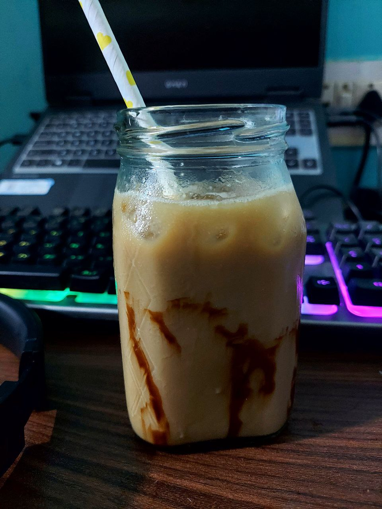

Cold Coffee

Cold Coffee in your home
Be it a programmer or simple office worker, everybody loves coffee. Especially the iced cold coffee. With the new covid 19, most of the workers are being forced to work from home and they don't have access to that chill coffee made in offices. But it's actually very easy to make coffee in your home without any problem.
Ingredients
- Instant Coffee powder
- Sugar
- Water
- Ice Cubes
- Choco Syrup
- Milk
Steps:
- Take a tea spoon of Instant Coffee in a glass
- Add 2 tea spoons of Sugar to it(Sugar Syrup preferable)
- Now put 3 tea spoons of hot water and mix until sugar is disolved
- Surround your Coffee glass with Choco Syrup
- Add the ice cubes to the glass
- Now add the coffee mixture in the glass
- Add the suitable amount of Water and Milk, put a straw and enjoy your chill cold coffee